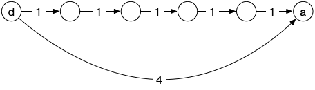

Arbres couvrants
Montrer que pour tout graphe connexe $G = (V, E)$, il existe au moins un arbre $T=(V, E')$ tel que $E' \subseteq E$.
solution
solution
Si un graphe est connexe et n'est pas un arbre, alors il existe un cycle. En supprimant une arête de ce cycle le graphe reste connexe et a strictement moins d'arêtes. On peut alors itérativement supprimer des arêtes à un graphe connexe qui contient un cycle jusqu'à obtenir un graphe connexe à $\vert V \vert -1$ arêtes qui ne contient pas de cycles : ce sera un arbre.
TBD def
On appelle ces arbres les arbres couvrants d'un graphe.
Les arbres couvrant d'un graphe sont beaucoup utilisés en optimisation. Nous allons montrer un exemple ci-après.
graphe valué
On peut associer à tout graphe $G = (V, E)$ une valuation $f: E \rightarrow \mathbb{R}$.
une mise en situation
On suppose que vous êtes chef d'un état. Vous voulez que votre territoire soit connexe (que les gens puissent aller partout sur votre territoire), mais vous ne voulez pas payer trop cher (vous voulez être ré-élu et ça fait mauvais genre d'augmenter les impôts).
Vous demandez donc à vos conseillers de créer un graphe dont les sommets correspondant à vos villes et dont les arêtes sont valuées par le coût de construction d'une route entre ces 2 villes. Ce graphe n'a pas forcément toutes les arêtes si le coût de construction est prohibitif par exemple.
La solution la plus efficace consiste à trouver de ce graphe un arbre couvrant dont la somme des valuations est minimale parmi tous les arbres couvrant.
Pourquoi ?
solution
solution
Un arbre est la structure minimale en nombre d'arêtes qui garantie la connexité. Parmi tous les arbres couvrants du graphe, on peut prendre un de ceux qui ont une somme des valuations de ses arêtes minimale (il y en a un nombre fini, le min existe donc mais il peut y en avoir plusieurs). Si la valuation d'une arête représente le coût, un arbre couvrant de poids minimal représente une solution de coût minimal pour rendre connexe le territoire.
un exemple
On considère le graphe ci-dessous :

Avec un peu d'imagination considérez que c'est le graphe de construction d'une petite île du pacifique dont vous êtes le nouveau chef d'état.
- Quel est l'arête qui sera forcément dans tous les arbres couvrants de poids minimum ?
- Quel est l'arête qui ne sera forcément jamais dans un arbre couvrant de poids minimum ?
- y a-t-il plusieurs arbres couvrants de poids minimum pour ce graphe ?
solution
solution
Toutes les preuves de cette partie et de la partie suivante vont fonctionner la même manière :
- on va ajouter une arête à un arbre
- ce nouveau graphe n'est plus un arbre mais il est connexe : il existe un cycle
- en supprimant n'importe quelle arête de ce cycle, le graphe redevient un arbre.
- si on supprime judicieusement l'arête du cycle, on arrivera à une contradiction. car le nouvel arbre sera mieux que l'arbre initial.
- Il n'y a qu'une seule arête avec une valuation minimale. S'il existait un arbre couvrant qui ne la possédait pas, on pourrait l'ajouter à cet arbre. Ce ne serait alors plus un arbre, il existerait donc un cycle. En supprimant une arête de ce cycle (on peut choisir une arête de valuation non minimale) on aurait à nouveau un arbre (connexe et nombre minimum d'arête), mais qui serait de valuation totale strictement plus petite que notre premier arbre. Ce qui est impossible puisqu'il était déjà de valuation minimale.
- Il n'y a qu'une seule arête avec une valuation maximale. De plus, il existe des cycles la contenant dans le graphe initial. Si on suppose qu'un arbre couvrant possède cette arête de valuation maximale et qu'on la supprime de l'arbre, on va se retrouver avec 2 parties connexes. Comme il existe un cycle contenant l'arête de valuation maximale dans le graphe initial, il va exister une arête du graphe initial qui relie les 2 parties connexes nouvellement créées. L'ajouter à notre graphe va à nouveau le rendre connexe : ce sera à nouveau un arbre. Comme il serait de valuation strictement plus petite que notre arbre initial, ce n'est pas possible.
- Oui, il existe plusieurs arbres couvrant car le cycle k-g-j-l est de valuation constante et valant 2. Un raisonnement identique aux 2 précédent montre que l'on peut échanger une arête de valuation 2 par une autre dans un arbre de valuation minimale.
propriété
- montrez que s'il existe deux arbres couvrants de poids minimum qui ne différent que d'une arête, alors elles ont même valuation
- montrez que si toutes les valuations sont différentes, il n'existe qu'un seul arbre couvrant de poids minimal.
- montrez que la réciproque n'est pas vraie
solution
solution
- Les 2 arbres ont même valuation de la somme des valuations de leurs arêtes :les 2 arêtes différentes ont donc forcément même valuation.
- On range les valuations des 2 arbres par ordre croissant. Les deux arbres étant différents, on s'arrête à la 1ère position dans cet ordre qui contient 2 arêtes différentes. L'une des arêtes va avoir une valuation inférieure à l'autre. On peut alors procéder comme précédemment et ajouter l'arête de valuation la plus petite dans l'autre arbre. Il faudra alors à nouveau supprimer une arête qui forme un cycle, mais on pourra enlever une arête de valuation plus grande, ce qui est impossible car l'arbre initial était de valuation minimale.
- Si le graphe de départ est un arbre, il n'y a qu'un seul arbre couvant et les valuations peuvent être égales.
un algorithme
Ce problème a l'air dur, mais il possède un algorithme (assez) simple pour le résoudre. L'algorithme suivant est l'algorithme de Prim (1957) :
Entrée :
* un graphe G = (V, E)
* une valuation f qui associe un réel à toute arête de G
Initialisation :
* cout_entree(x) = +∞ pour tout sommet x
* predecesseur(x) = x pour tout sommet x
* V' = {}, E' = {}
Algorithme :
* on choisit un sommet r quelconque
* cout_entree(r) = 0
* ajoute r à V'
* tant que V' n'est pas V:
* pour tous les voisins x de r qui ne sont pas dans V':
* si cout_entree(x) >= f(rx):
cout_entree(x) = f(rx)
predecesseur(x) = r
* soit x le sommet de V qui n'est pas dans V' minimisant cout_entree(x)
* r = x
* cout_entree(r) = 0
* ajoute r à V' et {r, predecesseur(r)} à E'
Retour :
T = (V', E')
- Prouver que si G est connexe, alors T est connexe et est un arbre
- Prouver que $T$ est un arbre couvrant de poids minimal pour $G$.
solution
solution
Voir wikipedia. Tout y est très bien expliqué.
Maintenant qu'on est sur que ça marche :
Réalisez l'algorithme en entier sur le graphe précédent.
TBD faire Kruskal et parler de relation d'équivalence. Premier contact avec les couleurs.
TBD le graphe formé des ALM et une arête si échange possible est connexe.
TBD un lien vers les matroïdes
Prim vs Dijkstra
- Quelle est la différence entre Prim et Dijsktra ?
- Montrez que les problèmes qu'ils résolvent sont différents et en déduire que l'arborescence obtenue par l'algorithme de Dijsktra pour un graphe non orienté peut être différente de l'arbre de poids minimum obtenu par Prim
solution
solution
Le graphe suivant montre que l'arborescence de Dijkstra sera différente de l'arbre de poids minimum donné par Prim.

Ne confondez pas les 2 problèmes !
un autre algorithme
TBD Kruskal
$\mathcal{O}(n^2\log(n))$ s'il faut trier, et $\mathcal{O}(n^2)$ sinon.